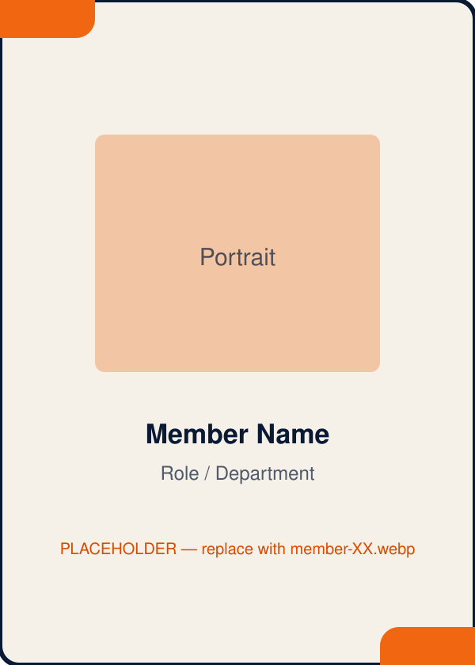

About
We listen to the stories that shape campus.
Echoes of Campus is an independent, student-focused media initiative currently focused on the University of Ilorin. Through conversations and storytelling, we bring student perspectives into view, the ones that usually stay between friends, in hostels or in the back row of a lecture theatre.
Our Story
Why this exists.
Every campus runs on stories. Opinions about the timetable, experiences nobody talks about openly, small wins and quiet frustrations. Most of it never travels very far. Echoes of Campus started from a simple observation: students have things to say, and saying them to the right person, in the right format, can change how a whole community understands itself.
We are not the university speaking to students. We are students speaking with students, and letting the record show it.

Mission, Vision & Values
What drives the work.
Mission: to provide a safe, welcoming space where students can express opinions, experiences and inspiring stories through conversation, and to amplify those voices.
Vision: to grow into a media powerhouse built on authentic storytelling, one that influences campus culture and social conversations across universities.
Submissions are handled thoughtfully and reviewed by the team before any editorial use. We treat what people share with care, and we are honest about the limits of what any platform can promise.
Integrity
We report honestly, correct ourselves when we get it wrong, and never put words in a student’s mouth.
Accessibility
Campus stories should be easy to find, easy to watch and easy to join, whatever your background or budget.
Empathy
Behind every answer is a person. We ask questions with respect and handle what we hear with care.
Authority
We take the work seriously: careful questions, clean editing, clear standards.

What We Do
How a story reaches you.
We follow the conversations happening around campus, then go directly to students with direct questions. Street interviews are where we started, and they remain the heart of the work. From there, we develop deeper conversations and cover selected stories, events and campaigns when they genuinely matter.
Echoes of Campus produces, curates and publishes its own editorial content. You can suggest, share, request and ask, and the team decides what to investigate, discuss or publish.
Meet the Team
The people behind the mic.
Sixteen ID cards, sixteen roles, one shared obsession with campus stories. Tap any card to view it in full.
Cards shown here are public-safe exports. If a card contains private QR, barcode or ID data, replace it with an approved export before publishing.

Our Impact
The conversations we want to make possible.
Echoes of Campus is at an early, honest stage, so we would rather show you where we are headed than dress up ambitions as achievements. These are the contributions we are working toward, and we will let the real results speak as they come.
Amplifying student perspectives
Giving everyday student opinions a platform they currently do not have.
Encouraging thoughtful discussion
Turning corridor debates into conversations the whole campus can join.
Bringing attention to real concerns
Putting experiences and issues on the record, so they are harder to ignore.
Creating volunteer opportunities
Building a space where students learn media craft by actually doing it.
Strengthening connections through storytelling
Helping a large campus feel a little more like a community.
Join the Team
Tell us how you would like to contribute.
Echoes of Campus runs on student volunteers. Maybe you want to hold the mic, edit the footage, design the cards, keep the socials alive or simply help organise the chaos. Whatever your angle, tell us about yourself and what draws you to this.
There are no guaranteed roles or perks to promise here, just real work on something that is genuinely growing. We ask for your name and email because we need a way to reach you if there is a fit. Everything else is optional.